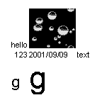
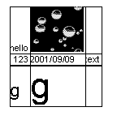
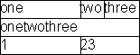

format, width = 0, top = false, font = false, border = 0
Takes an array of format items, and prints them in a grid layout.
The width argument is used to set a fixed width for all the columns.
The top argument is used to line the up the top of the grid with the top of the objects beside it.
The font argument is used to set a font for the entire grid.
For example:
Params.On_Preview(#(Grid (
((Text hello) (Image '\windows\bubbles.bmp'))
((Number 123) (ShortDate #20010909) (Text text))
((Text g font: (name: Arial size: 20)) (Text g font: (name: Arial size: 40)))
)))
Would produce:
The border argument is used to display a border around the cells. If the value is 0, no border will be displayed. The larger the number passed, the thicker the border around the cells.
For example:
Params.On_Preview(#(Grid (
((Text hello) (Image '\windows\bubbles.bmp') (Text))
((Number 123) (ShortDate #20010909) (Text text))
((Text g font: (name: Arial size: 20)) (Text g font: (name: Arial size: 40)) (Text))
), border: 1))
Would produce:
GridFormat supports spanning a particular child control over more than one cell. Add the member span at the end of the cell with a value of the number of cells to span. For example:
Params.On_Preview(#(Grid (
((Text one) (Text two) (Text three))
((Text onetwothree span: 2))
((Text 1) (Text 23 span: 1))
), border: 1))
Would produce:
